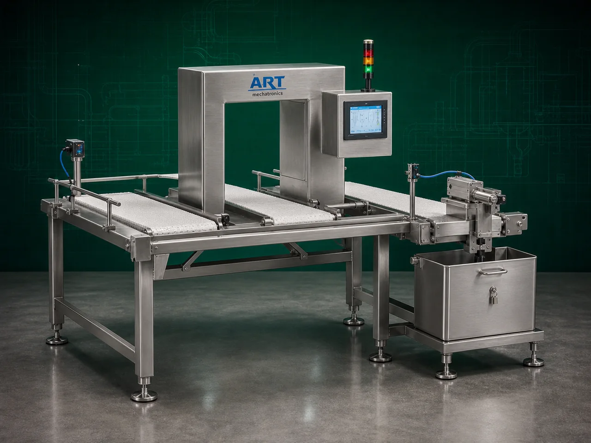

Metal Detector Machine (Industrial Metal Contamination Detection System)
A Metal Detector Machine, also known as an Industrial Metal Detection System or Food Metal Detector, is an advanced industrial inspection equipment designed for detecting and identifying metallic contaminants such as ferrous metals, non-ferrous metals, stainless steel particles, broken machine…

About the Metal Detector
Metal detector machines are essential for ensuring: ✔ Product safety ✔ Food quality ✔ Consumer protection ✔ Export compliance ✔ Machinery protection ✔ Industrial quality control
The machine uses advanced: ✔ Electromagnetic detection technology ✔ High-sensitivity sensing systems ✔ Digital signal processing ✔ Intelligent rejection systems
to identify even very small metal contaminants within product flow.
Metal detector machines are widely used in industries such as:
Food processing
Snack manufacturing
Pharmaceutical industries
Packaging industries
Spice industries
Grain processing plants
Meat and frozen food industries
Chemical industries
where strict contamination control and international safety standards are mandatory.
The machine is highly suitable for: ✔ Food inspection ✔ Packaging line inspection ✔ Powder contamination detection ✔ Pharmaceutical quality control ✔ Conveyor inspection systems ✔ Bulk material safety inspection
ART Mechatronics offers high-performance metal detector machines, engineered for high detection sensitivity, hygienic operation, continuous industrial inspection, and reliable contamination control.
Working Principle of Metal Detector Machine
Products move through metal detector inspection zone via: ✔ Conveyor system ✔ Gravity feed system ✔ Pipeline system
Machine generates electromagnetic field inside detection head
Any metallic particle entering field disturbs signal balance
Machine detects: ✔ Ferrous metals ✔ Non-ferrous metals ✔ Stainless steel particles ✔ Broken metallic contaminants with high sensitivity.
Advanced digital electronics analyze signal disturbance Machine differentiates between product effect and metal contamination
Upon detection: ✔ Reject flap ✔ Air blast system ✔ Pusher system ✔ Diverter mechanism automatically removes contaminated product.
Clean product continues through processing or packaging line
Types of Metal Detector Machines
- 1. Conveyor Metal Detector Machine
Installed on: ✔ Food processing lines ✔ Packaging conveyors for continuous product inspection.
- 2. Gravity Feed Metal Detector
Used for: ✔ Powders ✔ Granules ✔ Free-flowing materials
- 3. Pipeline Metal Detector
Suitable for: ✔ Liquids ✔ Pastes ✔ Slurry products
- 4. Pharmaceutical Metal Detector
Designed for: ✔ Tablets ✔ Capsules ✔ Pharma powders with ultra-high sensitivity.
- 5. Neck Type Metal Detector
Installed above: ✔ Packaging machines ✔ Vertical form fill seal machines
- 6. Heavy Duty Industrial Metal Detector
Suitable for: ✔ Bulk materials ✔ Large industrial processing plants
Industries Using Metal Detector Machine
🍃 Food Processing Industry Food contamination inspection 🍟 Snack Manufacturing Industry Chips and namkeen inspection 💊 Pharmaceutical Industry Tablet and capsule quality control 🌶️ Spice Industry Spice powder contamination detection 🌾 Grain Processing Industry Grain and flour safety inspection ❄️ Frozen Food Industry Frozen food contamination control ⚗️ Chemical Industry Chemical powder inspection 📦 Packaging Industry Final packaged product inspection
Features & Advantages
✔ Detects ferrous, non-ferrous and stainless steel contaminants ✔ High-sensitivity inspection technology ✔ Improves product safety and export compliance ✔ Automatic rejection systems available ✔ Continuous industrial inspection operation ✔ Hygienic food-grade construction ✔ Reduces contamination risks and recalls ✔ User-friendly PLC/HMI controls ✔ Low maintenance and reliable performance
Technical Highlights
Detection Technology: Electromagnetic sensing Digital signal processing Detection Capability: Ferrous metals Non-ferrous metals Stainless steel Construction: Stainless Steel food-grade design Rejection Systems: Air reject Flap reject Pusher reject Installation Type: Conveyor type Gravity type Pipeline type Automation: Fully automatic PLC/HMI system
Turnkey Metal Detection Solutions
ART Mechatronics offers: Complete metal detection systems Conveyor and packaging line integration Food safety inspection systems Automatic rejection systems Installation & commissioning After-sales service & AMC
Why Choose Art Mechatronics
Expertise in industrial inspection and contamination control systems Customized solutions for food and pharma industries High-performance and reliable detection technology Hygienic food-grade machine construction Proven industrial performance across sectors
Applications
Food Processing Plants Snack Manufacturing Facilities Pharmaceutical Manufacturing Units Spice Processing Industries Grain Processing Plants Packaging Lines
Related Cleaning, Sorting & Grading machines
Get pricing & specs for the Metal Detector
Share the product, target capacity, current process and plant location. These details help our engineers discuss the right machine or line configuration.
One partner, from design to start-up
ART Mechatronics designs, manufactures, installs and commissions your Metal Detector solution with regional presence in India, UAE and Thailand.